| |
Huygens Remote
Manager - Online manual
|
|
Huygens remote manager (HRM)
is a web interface to Scientific
Volume Imaging's
Huygens Professional software, that allows the initiation of batch
deconvolutions with up to 300 jobs at a time.
Introduction
Features and limits of HRM
- HRM runs on a 64-bit, dual-Opteron IBM computer
equipped
with 10GB memory. The operating system is SuSE Linux 9.3 64bit.
- Up to 300 jobs can be started at once.
- Several image formats and geometries are
supported.
- Settings are stored in a database, and are
therefore always
ready for further deconvolution runs.
- Currently, the HRM interface does not
allow deconvolution with a measured point-spread function. A synthetic
PSF is calculated from the optical parameters used for imaging. Please
contact us if you want to run deconvolution on your stack with a
measured PSF.
General information about deconvolution
SVI
support resources
is a collection of documents on deconvolution and 3D microscopy in
general. Some introduction on the topic can also be found in the
Training section of FMI's ImageAccess database.
Prerequisites for successful deconvolution
To increase the probability of achieving a successful deconvolution on
your data there are several criteria which have to be met. Please
download and fill this
file and contact us before you
try to run your first deconvolution. Briefly, make sure that:
- The acquisition was performed
optimally, i.e. make sure to:
- optimize objective lens and sample setup
- correctly sample in
both XY and Z
- focus sufficiently above and below the
specimen
- ensure that the illumination source is stable
and uniform
- prevent image saturation
- minimize stage vibration and specimen
movement
- correct for any camera or detector defects
- All metadata for the deconvolution is known.
For
deconvolution in Huygens Professional, the following information is
mandatory:
- Sample size along x, y and z
- Microscope type
- Numerical aperture
- Pinhole radius (and distance)
- Lens refractive index
- Medium refractive index
- Excitation
wavelength
- Emission
wavelength
- Excitation photons
- Your data is saved in one of the supported formats
Step-by-step guide to creating a job in HRM
The following is a brief tutorial on how to set up a job in HRM. For
any questions or comments you can contact us.
1. Copy your data to \\huygens\huygens_input
Copy your data into \\huygens\huygens_input\YOUR_NAME:
we suggest that you create a subfolder in \\huygens\huygens_input where
to put the data to be processed. This will maintain the level of chaos
within an acceptable range.
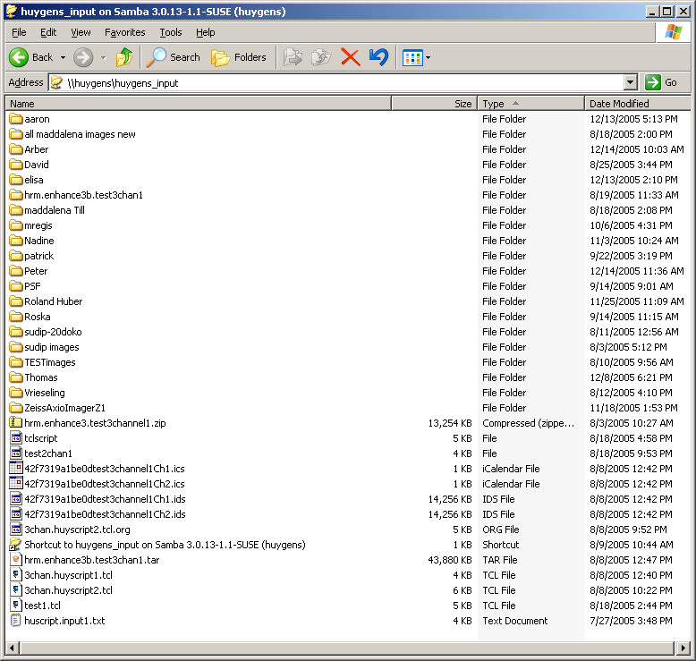
2. Start HRM: point your web browser to
http://huygens.fmi.ch
Enter http://huygens.fmi.ch into your web browser and you will be
directed to the login page. Use following information:
Name: pschwarb
Password: huygens
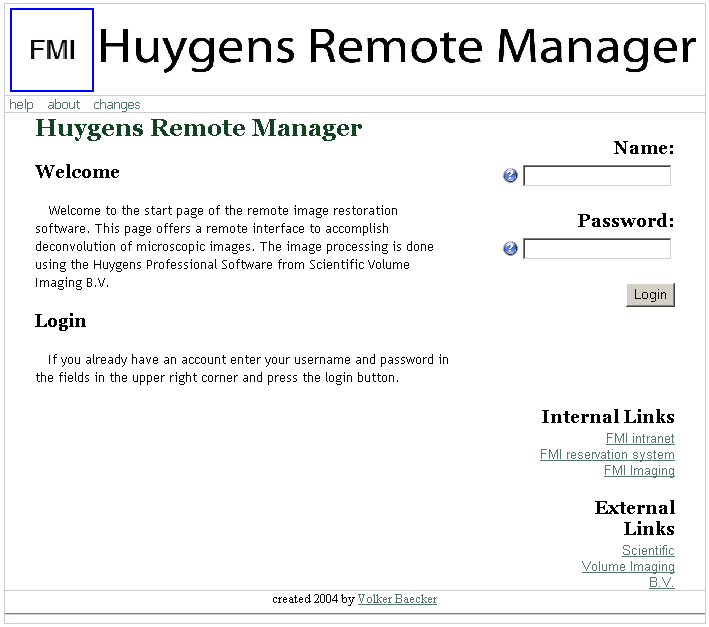
3. Step 1: Select or create new Parameter
settings
In the first step of Job creation, you will have to define all relevant
parameters
related to your data. All choices in HRM are accompanied by a (help) button: for this reason,
we won't discuss all possible selections here.
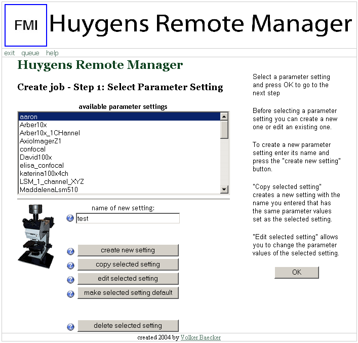
If you want to use one of the stored settings, simply select it in the available
parameter settings list and click on the OK button.
Alternatively you can create new settings or edit existing ones. As an
example, we will now create a new setting. Enter a name (e.g. test)
in the "name of new
setting:" field and click on the "create new setting" button.
This will bring you to the new screen (point 3a).
3a. Select the format of your data
For the sake of the example, we will assume here that your data is
stored in
the LSM510 file format and that it contains 1 channel only. Moreover,
the
data is organized in the XYZ geometry. Click on one of the OK buttons
after selection
to continue to the next screen.
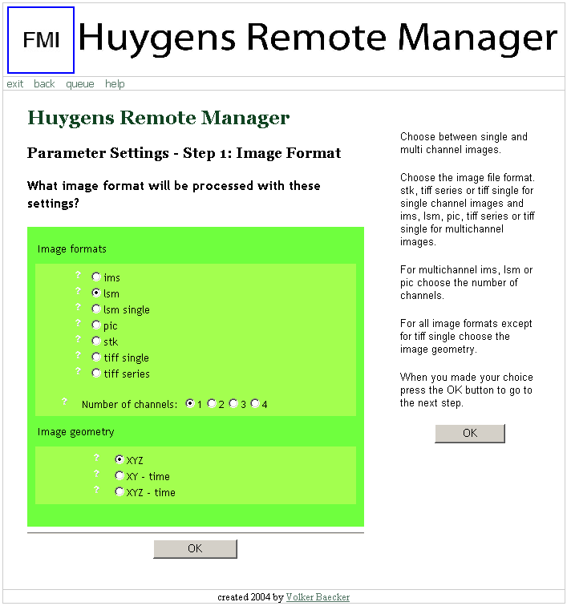
3b. Enter all relevant acquisition parameters
Detailed help for all entries in this page can be accessed by clicking
on the buttons next to
the fields. You should already have filled all the information
requested for this page in the form you sent us.
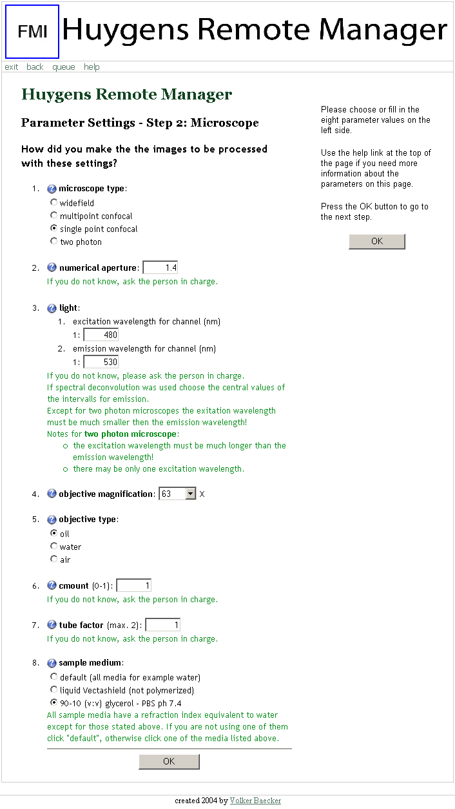
3c. Sampling parameters
As usual, detailed help can be obtained by clicking on the buttons. Regarding the pixel
size field, please notice that if you selected "wide-field
microscope" in the previous screen (in point 3b), you will need to
enter the actual pixel size of the camera chip
and not of the final image. This means that for a widefield microscope
you will be entering a pixel size of - let's say - 6500 nm (because
internally this value will then be divided by the magnification, e.g.
100x, to get to the pixel size in the image), whereas for a "confocal
microscope" it will be something like 90 nm (magnification already
considered). This will be changed in the future.
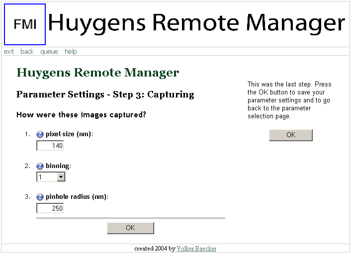
Clicking the OK button, you will be brought back to
the Step 1: Select Parameter Setting screen (point
3). Make sure to select the newly created test
setting and click again on OK to continue to Step 2.
4. Step 2: Select or create new Task settings
In Step 2, we specify what operations are to be performed on the data.
Again, as an example we create a new set of settings test.
Enter 'test' in the "name
of new setting:" field and click on the "create new setting" button.
Note that the name of the Task settings can be different from the name
of the Parameter settings (point 3).
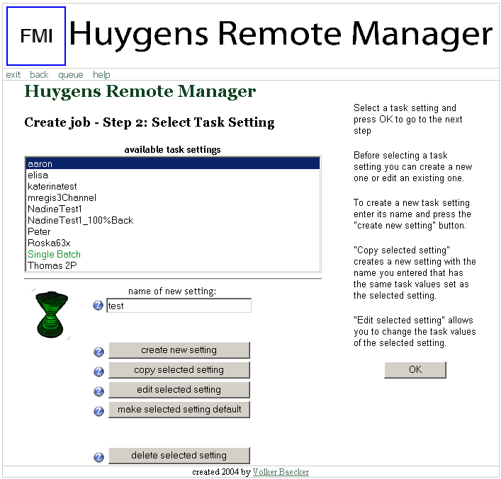
4a. Task settings
HRM offers three modes of operation: full restoration, remove noise, and remove background.
Only full restoration performs deconvolution.
Again, click on the buttons for
help. Some suggestions are also listed in green.
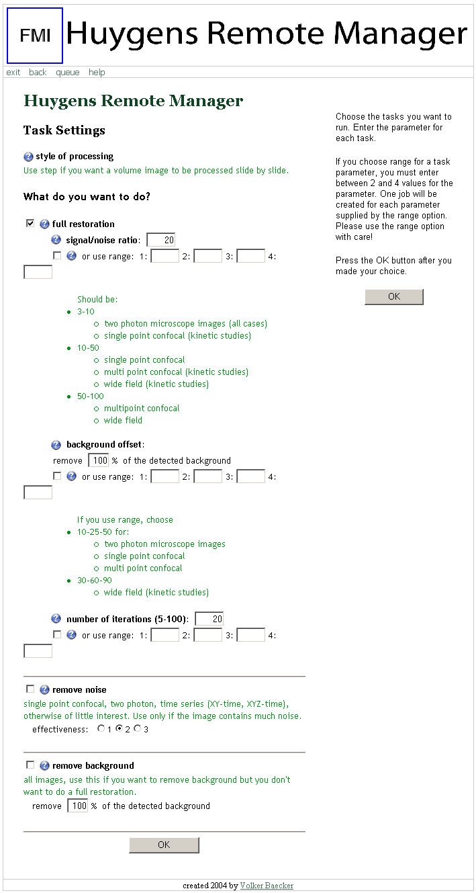
5. Step 3: Select images
From the available
images field, as many images as needed can be added to the
selected images list.
The available images are those files you (and others...) copied to
\\huygens\huygens_input
that match the selected file format (in our example, LSM510 files).
You can add multiple files by CTRL-left clicking on them. When you are
done, click on the green
arrow to add files to the selected images list.
The lists can be refreshed at any time via the update view button
(e.g. if files are copied to \\huygens\huygens_input only later). Click
OK when
ready.
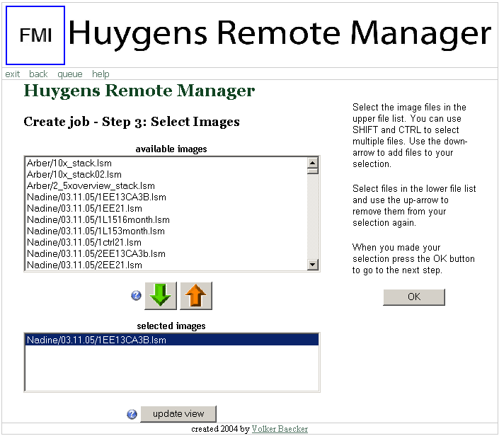
As for the Parameter Setting, clicking the OK button will bring
you back to the Step
2: Select Task Setting screen. Once there, select the
newly created test setting and
click on OK
to continue to Step 4.
6. Step 4: Review selection and create job
In this screen you can review your selection, select the output file format
(default is the Imaris file format ims), and
(finally!) start the job by clicking on the create job button.
Remark: the first time(s), you will be tempted to click on Ok:
don't do that. If you do not click on create job
(at the bottom of the page), your job won't be started.
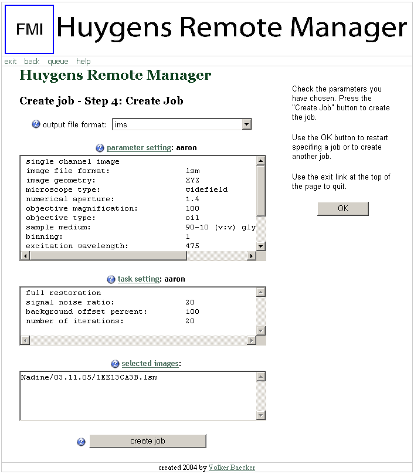
7. Check that HRM has added the job to the queue
Click on queue
in the navigation menu at the top of the page to display the Queue
Manager.
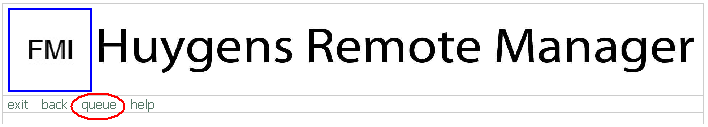
Your job should be listed
at the end of the queue.
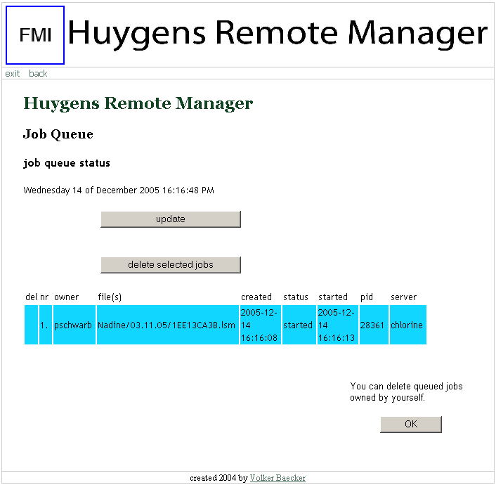
8. Collect your deconvolved data from \\huygens\huygens_output
Once the job is finished, the deconvolved data will be put in
\\huygens\huygens_output\YOUR_NAME for you to collect.
If this is your first deconvolution, we really suggest that
you contact us to discuss the result.
Have fun with HRM!
|
|